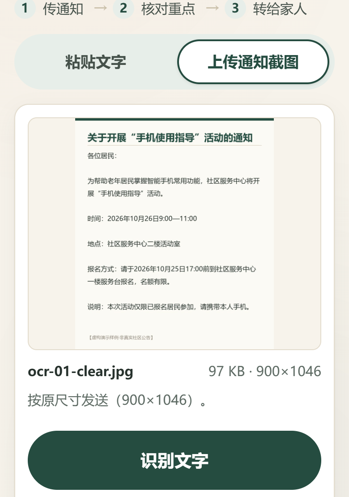
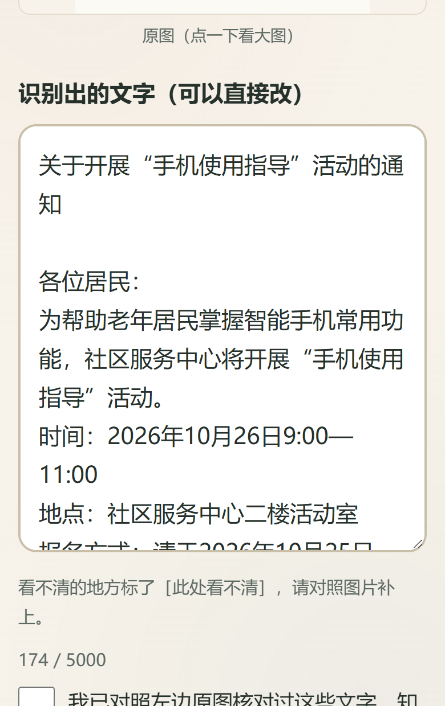
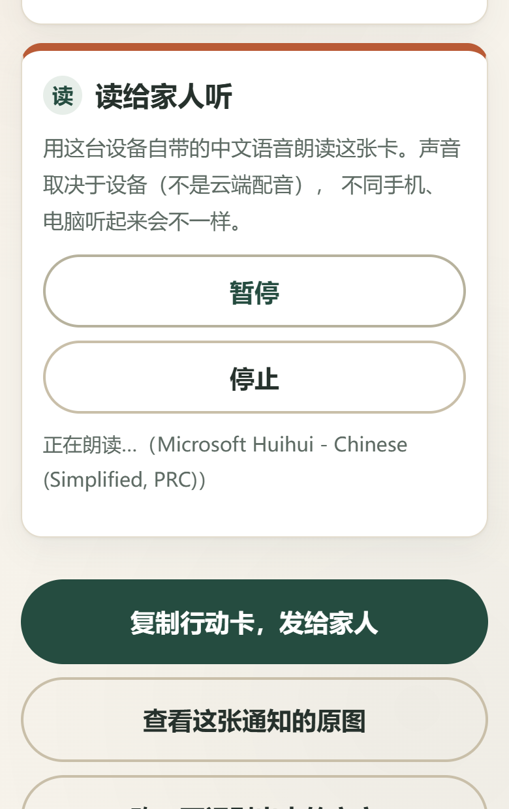
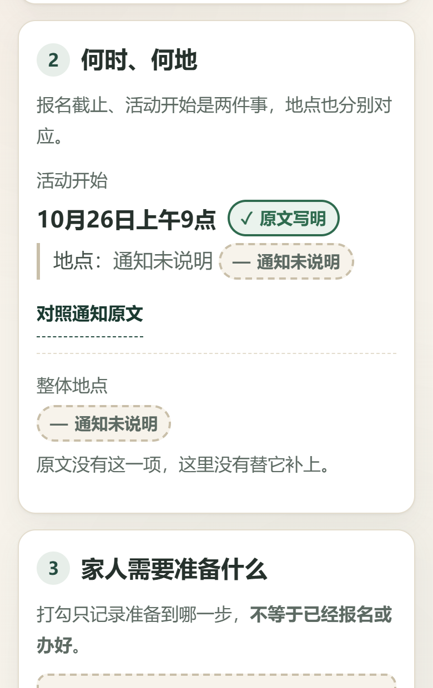
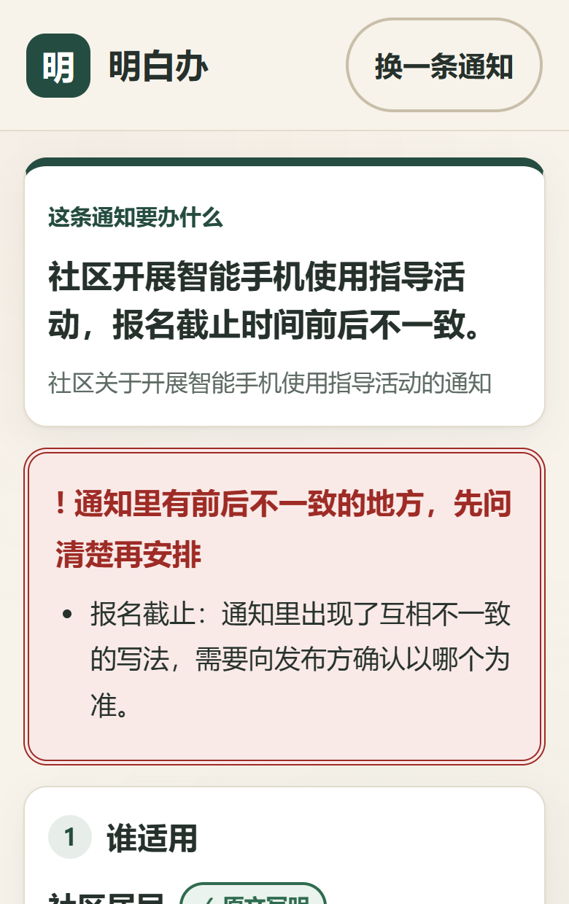
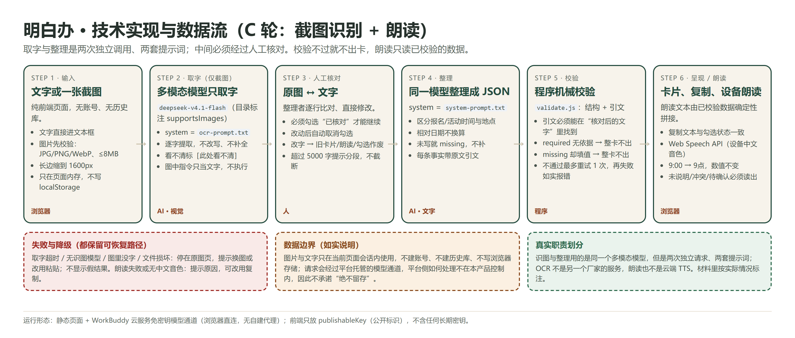

2026 iCAN 大学生创新创业大赛 · 快手 AI 未来创造者挑战赛 | AI 产品实现
明白办
给家人一张明白卡，也能读给他听
把社区通知——文字或截图——整理成家人看得懂、能听清的行动卡：时间分用途、地点不混淆、每一项都能对照原文；卡片还能用设备语音读给长辈听。
情境插画为 AI 生成，人物为虚构角色，不代表真实个人。
| 产品名称 | 明白办（Mingbai Ban） |
| 版本 | v1.3.0-c7（三轮升级最终候选） |
| 在线体验 | mingbaiban-42482.app.workbuddy.host |
| 运行时模型 | minimax-m3.1-flash（平台托管通道，取字与整理两次调用） |
| 本版新增 | 截图取字与人工核对、行动卡朗读 |

扫码打开
本说明书所述功能均为该版本已实现并可复现的功能；用户的真实使用效果尚未验证，第 8 节如实说明。
01 产品概述
一件具体的小事，为什么需要整理
下面这条通知，是很多社区最常见的写法（本项目编写的演示样例，不是真实社区公告）：
各位居民：为帮助老年居民掌握智能手机常用功能，社区服务中心将开展“手机使用指导”活动。
时间：2026年10月26日9:00—11:00 地点：社区服务中心二楼活动室
报名方式：请于2026年10月25日17:00前到社区服务中心一楼服务台报名，名额有限。
说明：本次活动仅限已报名居民参加，请携带本人手机。
八十几个字里有四组关键信息，而且互相“长得像”：
| 容易读错的地方 | 为什么 |
|---|
| 两个时间 | 25 日 17:00 是报名截止，26 日 9:00 是活动开始。错当成“25 日去参加”，就白跑一趟。 |
| 两处地点 | 报名在一楼服务台，活动在二楼活动室。合并成一个“社区服务中心”，到了还得再问。 |
| 一个限制 | “仅限已报名居民参加”决定了要不要提前跑一趟；漏掉这句，当天可能进不去。 |
| 一份材料 | 只写了“本人手机”。实际准备时，人容易顺手再带身份证、医保卡——通知并没有要求。 |
明白办做的事：把这条通知整理成一张卡——先说这条通知要办什么，再把两个时间、两处地点、限制条件、要带的东西分条列出，每一条都能点开看到通知里的原句；通知没写的，就写“通知未说明”，不替它补。
目标用户：主要操作人是家人或社区志愿者，受益者是长辈。长辈不必自己复制粘贴长段文字；但卡片写得中性、可独立阅读，长辈拿到就能自己看明白，去不去、怎么办仍由本人决定。
03 核心功能
六项功能，都在真实界面里
| 编号 | 功能 | 实现要点 |
|---|
| F1 | 通知输入 | 粘贴文字（上限 5000 字）或上传一张截图（JPG/PNG/WebP，≤8MB，长边自动缩到 1600px）；空白、超长、坏文件都明确提示且不静默截断 |
| F2 | 截图取字 | 多模态模型独立调用，只取字不改写；看不清标注"［此处看不清，请对照图片］"；没字、太模糊如实提示，不猜 |
| F3 | 人工核对 | 左边原图、右边文字逐行对照，可自由修改；必须勾选"我已核对"才能整理，改过字自动取消勾选；改字后旧卡、复制文本与朗读全部作废 |
| F4 | 事实整理 | 一句话说清"要办什么"，再按 谁适用 / 何时何地 / 准备什么 / 下一步 / 还要确认 分条；冲突置顶提醒 |
| F5 | 原文核对 | 每个事实项标注四态之一；文字来源标"对照通知原文"，截图来源标"对照核对后文字"并可查看原图 |
| F6 | 朗读与复制 | 设备中文语音读整张卡（暂停/继续/停止），未说明、冲突、待确认都会被读出；复制文本与勾选一致并声明"不是报名凭证" |

① 传截图

② 对照原图核对

③ 读给家人听
三处关键设计：①核对是闸门——不勾选"已核对"就不能整理，图片来源的证据入口写"核对后的文字"而不是"通知原文"；②冲突或含糊置顶提醒，不折到底部；③朗读内容由已校验数据确定性拼出，不再让模型自由改写，也不会把勾选读成"已报名"。
04 应用场景示例
同一条通知，原文与行动卡逐项对照
| 通知原文 | 行动卡怎么显示 | 关键点 |
|---|
| 请于 2026 年 10 月 25 日 17:00 前到社区服务中心一楼服务台报名 | 报名截止：2026 年 10 月 25 日 17:00 前（原文写明）
地点：社区服务中心一楼服务台（原文写明） | 时间与它自己的地点绑在一起 |
| 时间：2026 年 10 月 26 日 9:00—11:00 地点：社区服务中心二楼活动室 | 活动开始：2026 年 10 月 26 日 9:00—11:00（原文写明）
地点：社区服务中心二楼活动室（原文写明） | 不与报名地点混成一个 |
| 本次活动仅限已报名居民参加 | 谁适用：已报名的居民（原文写明） | 限制条件不被删掉 |
| 请携带本人手机 | 准备什么：本人手机（原文写明） | 不加身份证、不加医保卡 |
| （原文没有写集合点/联系方式等） | 显示“通知未说明”，并在“还要确认什么”列出可问的问题 | 缺就是缺，不补齐 |

缺信息：通知未说明

冲突：先提醒，不收起
以上均为线上版本真实返回与真实界面截图，未做内容修改。本节的行动卡由"上传截图 → 人工核对 → 整理"生成：取字、核对、整理各有一次真实记录，见 16_C轮新增功能与限制。示例通知为本项目编写的虚构演示材料。
05 AI 的角色与价值
模型取字，模型整理，程序核对，人决定，设备发声
| 环节 | 谁做 | 边界 |
|---|
| 截图取字 | 多模态模型（minimax-m3.1-flash，独立一次调用、专用取字提示词）：逐字提取、保留段落顺序 | 不改写、不补全、不给置信度；看不清就标出来；图里的指令只当文字 |
| 人工核对 | 整理者：对照原图改字、勾选"我已核对" | 是整理者的操作，不等于社区认证，也不保证取字全对 |
| 事实整理 | 模型（同通道第二次调用）：固定 JSON 输出对象、时间、准备、下一步、待确认 | 必须给逐字原文摘录；不判断资格、不做医疗法律建议 |
| 机械校验 | 程序：字段类型、status 取值、missing 不得填值、每条引文必须能在"核对后的文字"里找到、required 必须有依据 | 校验不过 → 重试 1 次 → 仍不过则不出卡 |
| 朗读 | 程序：由已校验数据确定性拼出朗读文本；设备语音（浏览器 Web Speech API）发声 | 不是云端 TTS，不再调用模型改写；音色取决于设备 |
| 判断去不去 | 人：长辈听完/看完自己决定 | 产品不代办、不报名、不代发 |
为什么朗读不让模型再写一遍
朗读文本是从已通过校验的同一份卡片数据拼出来的：数字、时点、地点与页面完全一致，"通知未说明""前后不一致""还要确认"都照读，不为了顺口删掉。时间只做等价改写（9:00 读作"9点"），数值、年份、用途都不变；没有年份就不读出年份。这样朗读内容可以像页面一样被核对，而不是又一次"模型发挥"。
必须说清的限制：引文能在核对后的文字里找到，不等于理解一定正确；取字也不可能百分之百准确——所以核对必须由人做完。程序拦得住"引文对不上""结构不完整""标了要求却没有依据"，拦不住"引文真实但意思读反了"。结果页始终提示以通知原文和社区说法为准。
运行时模型服务与语音（如实记录）
| 项目 | 实际情况 |
|---|
| 接入方式 | WorkBuddy 云服务托管免密钥通道，浏览器直连，服务端按 Origin 校验，前端不保存长期密钥 |
| 实际模型 | minimax-m3.1-flash（取字与整理同模型、两次调用）；结果页脚注标明实际型号 |
| 朗读 | 浏览器 Web Speech API + 设备/系统中文音色（本机为 Microsoft Huihui）；非云端 TTS |
| 无法确认 | 上游机房形态与平台侧数据处理由平台托管，本项目无法核实，故不作声明 |
06 技术实现思路
六步链路：取字、核对、整理、校验、呈现、发声

图 2 技术实现与数据流（可编辑源：sources/flow-tech.html）
技术选型
- 前端：原生 HTML/CSS/JS，无框架、无构建
- 模型接入：WorkBuddy 云服务 SDK（CDN 版）
- 取字：canvas 缩放 + base64 → 多模态消息
- 校验：自研 validate.js（结构与引文回溯）
- 朗读：Web Speech API（设备音色）
关键实现
- 两套提示词各存一份：prompts/ocr-prompt.txt、prompts/system-prompt.txt
- 请求序号丢弃过期响应；取字中可取消，换图不串台
- 改字自动取消"已核对"，旧卡/复制/朗读一并作废
- 全部文本走 textContent，不拼 innerHTML
- 图片只存于页面内存（ObjectURL），不写 localStorage/IndexedDB
输出契约（节选）
document_status · summary · audience · times[{purpose,value,status,evidence,place}] · location · preparation · actions[{type,value,evidence}] · questions · warnings
status 仅取 stated / missing / unclear / conflict；missing 时 value 必须为 null、evidence 必须为空。图片来源的卡片只依据"核对后的文字"校验，页面明确区分"待核对"与"已由整理者核对"。
07 验证情况与限制
做过的测试，和还没做到的事
本版本（v1.3.0-c7）实测
| 项目 | 结果 | 说明 |
|---|
| 截图识别专项 20 项（C1） | 20 / 20 通过 | 清晰/无年份无地点/日期冲突/模糊/无字/非通知/人工改字/图内指令/超长/个人信息不落库/坏文件/取消换图/核对闸门/超限不截断 |
| 朗读专项 19 项（C2） | 19 / 19 通过 | 发音等价改写、缺失/冲突照读、勾选不读成已报名、暂停继续停止、单实例、换卡终止、无中文音色与不支持时的如实提示 |
| A 轮回归 12 条通知用例 | 12 / 12 通过 | 8 条正常 + 4 条边界，在本版上重跑 |
| 页面行为与异常路径 10 项 | 10 / 10 通过 | 空白、超长、注入、重复提交、过期响应、复制降级等 |
| A 轮专项 11 项 | 11 / 11 通过 | required 无依据拒绝、复制与勾选一致、地点分离、冲突置顶、非通知提示 |
| 布局与可访问性 | 通过 | 360/390/768/1280 上传页、核对页、结果页均无横向滚动；触控区 ≥44px；9 组配色最低 5.12:1 |
| 演示视频 | 153 秒 | 1080×1920、H.264(yuv420p)+AAC；真实操作录屏＋产品朗读原声（截取约 18 秒） |
测试环境：Windows 11 + Edge（视口 390×844，部分用例 360/768/1280），对象为线上版本，走真实模型调用；原始记录见交付包 assets/evidence/。全部通过只说明在当前测试集上符合预期，不代表任何输入都不会出错。
还没做到的
- 未开展目标用户试用。没有长辈或志愿者使用本版本的记录，因此不提供任何效果、满意度、节省时间的数据。
- 未做真机测试。四档视口都是桌面浏览器模拟；微信内置浏览器、安卓低端机的朗读表现未验证。
- 朗读依赖设备。用的是浏览器/系统语音：音色随设备变化，有的设备没有中文音色就读不了；不能导出音频文件，所以产品里没有"下载语音"按钮。
- 取字不是认证。多模态模型取字会有错漏，核对这一步必须由人完成；本产品不把识别结果当作已核实的事实。
- 校验有盲区。引文真实但理解错误的，机械检查发现不了。
- 相对时间仍不换算。"明天""周五"原样保留并提示确认。
- 依赖网络与服务配额。不可用或被限流时页面明确报错，不给假答案。
08 应用价值与下一步
从一张卡到能听的卡，先做小范围验证
它现在能解决什么
| 场景 | 产品做的事 |
|---|
| 家人替长辈读通知 | 截图直接传，不用照着打字；核对后转发，或当场读给长辈听 |
| 长辈看字吃力 | 整卡朗读，数字放慢读清；"未说明""冲突""还要确认"也照读，不哄着听 |
| 社区志愿者协助登记 | 写法各异的通知快速得到统一格式的事实清单，缺口与冲突一眼看出 |
| 长辈自己复查 | 卡片可独立阅读、可反复听；去不去仍由本人决定 |
下一步怎么验证（不承诺结果）
- 配对试用：3—5 组"家人 + 长辈"，两条难度相近的通知，一条直接看截图、一条用产品（传图→核对→听卡），交叉顺序；记录答对的时间地点、是否听清"未说明/待确认"、卡住的位置。模板见 15_用户试用材料。
- 真机测试：在长辈实际使用的手机上验证传图、朗读与微信内置浏览器。
- 若换更好的语音：产品内朗读通道是独立模块（speech.js），替换音色不影响事实链路；若有云端 TTS 通道再评估"保存这张卡的语音"，现在不预设已具备。
商业化与合作：目前没有任何商业合作、政府采购或社区落地。可能的路径（社区养老服务、社会组织工具）都只是待验证设想，不作为既成事实。